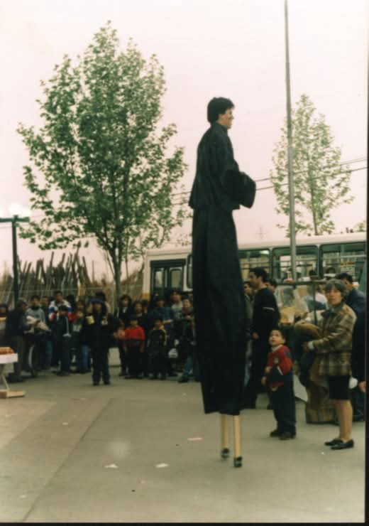

Memoria Visual
Galería Histórica
Imágenes que preservan la memoria de El Arca, el Jano y la lucha popular en La Goya.
El Cabezón Jano
Pedro Alejandro González Reyes, fundador de El Arca.

Sede El Arca
El espacio físico donde la comunidad se reunía.

Jano pintando la sede
Construyendo con sus propias manos el espacio comunitario.

Actividades Comunitarias
Entrega simbólica de las llaves de la Población.

Marcha Comunitaria
La Goya en las calles, organización popular y resistencia.

Sueño de TV Comunitaria
Jano con un compañero planificando la comunicación popular.

El Jano
Su mirada y su lucha siguen presentes.

Infancias en El Arca
Talleres y actividades para las niñas y niños de La Goya.

Compañeros
Memoria de quienes partieron pero viven en el pueblo.

Radio Libre
Montaje y talleres del dial radial comunitario.

Antupeñi
Hijos del Sol — organización territorial en La Pintana.